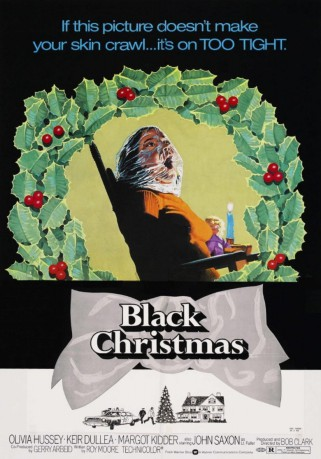

#5138 Black Christmas
Alternativ: Jessy - Die Treppe in den Tod (Originaltitel)
 
 IMDB-Wertung: 7.2 / 10
IMDB-Wertung: 7.2 / 10  Tomatometer: 71
Tomatometer: 71  Metascore: 0
Metascore: 0 
Es ist Weihnachten und ein verrückter Psychopath macht sich daran, eine Mädchenverbindung auf grausame Weise zu triezen. Angefangen mit höchst obszönen Anrufen wird aus dem Treiben bald blutiger Ernst und ein Mädel nach dem Anderen verschwindet spurlos. Lieutenant Kenneth Fuller steht vor einem Rätsel, das er anscheinend nur zusammen mit Jessica Bradford, einem weiteren Mitglied der Mädchenverbindung, lösen kann. Doch bis es soweit ist, sollen dem mysteriösen Killer noch einige Opfer in die Hände fallen...
Jahr: 1974
Dauer: 97 Minuten
FSK: 16
Land: Kanada Studio: Tobis FilmkunstTonspuren: DTS - ,
Untertitel:
Auflösung: 1080p (1920x1080) Größe: 8949 MB
Genre: Thriller, Horror, Mystery, Weihnachten
Regisseur: Bob Clark
Drehbuch: Dori Pierson
Soundtrack:
Darsteller:
- Olivia Hussey als Jess
 Keir Dullea als Peter
Keir Dullea als Peter- Margot Kidder als Barb
 John Saxon als Lt. Ken Fuller
John Saxon als Lt. Ken Fuller Andrea Martin als Phyl
Andrea Martin als Phyl Doug McGrath als Sargeant Nash
Doug McGrath als Sargeant Nash Art Hindle als Chris Hayden
Art Hindle als Chris Hayden- Lynne Griffin als Clare Harrison
- David Clement als Cogan
- John Stoneham Sr. als Cop
- Bob Clark als Prowler Shadow / Phone Voice , uncredited
- Nick Mancuso als The Prowler / Phone Voice , uncredited
- Marian Waldman als Mrs. Mac
- James Edmond als Mr. Harrison
- Michael Rapport als Patrick
 Leslie Carlson als Graham
Leslie Carlson als Graham- Martha Gibson als Mrs. Quaife
- John Rutter als Laughing Detective
- Robert Warner als Doctor
- Sydney Brown als Farmer
- Jack Van Evera als Search Party
- Les Rubie als Search Party
- Marcia Diamond als Woman
- Pam Barney als Jean
- Robert Hawkins als Wes
- Julian Reed als Jennings
- Dave Mann als Cop
- Danny Gain als Cop
- Tom Foreman als Cop
- Gerry Arbeid als Cab Driver , uncredited
- John 'Frenchie' Berger als Man on snowmobile , uncredited
- Albert J. Dunk als Billy , uncredited
- David M. Robertson als Uniformed Cop , uncredited
- Ann Sweeny als Phone Voice , uncredited
- Debi Weldon als Sorority Girl , uncredited
Datei: X:\1974\Black Christmas (1974, FSK16, 1920x1080).mkv seit 23.12.2016
Festplatte: HD 1971-1979
 Es gibt insgesamt 33 Filme in der Gruppe '1974'
Es gibt insgesamt 33 Filme in der Gruppe '1974'